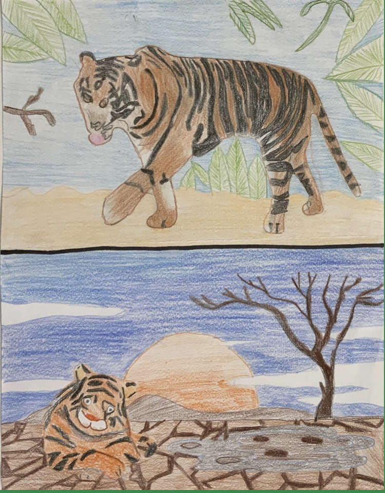

Cause of Global Warming: Deforstation

|
Within the past decade, several species of critically endangered animals have been on the brink of extinction from the effects of climate change. The preservation of habitats is necessary for animal and plant species alike to successfully carry out their life cycles (grow and reproduce). When trees are cut down and burned or left to rot, their stored up carbon is released into the air in the form of carbon dioxide, raising carbon emissions, which contributes to global warming. Deforestation has imposed devastating factors among the habitats of animals, specifically, the Sumatran Tiger. According to National Geographic, “[o]f the habitat tigers rely on in Sumatra, approximately 17 percent was deforested between 2000 and 2012”(“Nature Communications”). This nominal percentage has only increased with time as the threat of extinction has made significant peaks with the deforestation of these Sumatran tiger habitats. These tigers are living in small, fragmented habitats in the status quo, unable to find sources of food or shelter from the once lush forests of Sumatra they called home. As the Sumatra forests have harvested an environment unsuitable for these animals, they are at risk of being hunted down, dying from starvation, or not being able to live long enough to reproduce. My drawing illustrates these complications by showing a side-by-side of a Sumatran tiger living in a healthy habitat on the top half, comparatively, to the bottom half showing their loss of a habitat as a result of deforestation.
Preethi Reddy
|